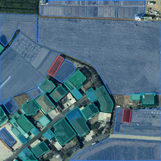
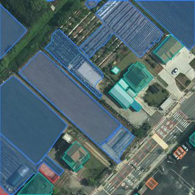

프로젝트
비닐하우스 2026
고치기끝난 프로젝트로 보관프로젝트장LX 직원test@lx.or.kr넘기기
구성원없음더하기
1프로젝트장이 직접 넘깁니다 — 지금은 LX 관리자만 바꿀 수 있음
지금 단계 · 6 서비스 관리
시범 3곳
앞 단계가 남았습니다 — 결과 확인 0/20표본 20건을 확인하면 현장 확인 필요 필지가 셉니다
결과 확인 열기지역 · 결과 장면
3곳 모두 AI 결과 있음 · 현장 확인 전
- 증평군2023 항공영상 · 시범
- 함양군2023 항공영상 · 시범
- 남원시2025 드론영상 · 시범
- XI맵에서 결과 보기
 결과 장면
결과 장면

만든 것
저장 공간 9.7 MB




1차쓸 수 있음
모델 · 학습 2회등록 승인 09.30
결과 확인 0/20아직 확인 전
시범3곳시범 적용
적용 · 시범 3곳운영 0 · 결재 대기 0
재학습
마지막 학습 뒤 1일표본 200장9.30 14:27
학습 끝9.30 15:33
모델 승인9.30 15:35
프로젝트 만듦10.1 08:58
지금10.1 16:39
기관 검토 요청 0건새 영상 시점 없음앞 단계 결과 확인 0/20
지금은 다시 학습할
근거가 적습니다
기록 · 메모 · 파일
모두 보기 7- 10.01 08:58프로젝트 만듦LX 직원
- 09.30 15:35모델 등록 승인LX 관리자
- 09.30 15:33학습 끝 · 2번째LX 직원
메모 한 줄파일남기기
1최근 3줄만 — 나머지는 '모두 보기' 서랍. 화면이 길어지지 않음